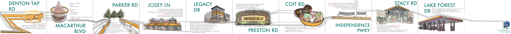
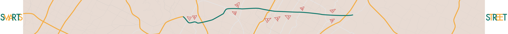

My Street Smarts: SRT
Sam Rayburn Tollway is located in Dallas, TX and runs from my hometown to a city called Garland. I love driving on this highway because there is rarely any traffic, and especially for all the attractions and eatery right off the highway! My familiarity to this highway has led me to create a personal iteniary, rendered as an accordion book. The front portrays ten exits and the attraction/eatery I recommend to the drivers. The back is the map of the highway with personal notations of the exits.

